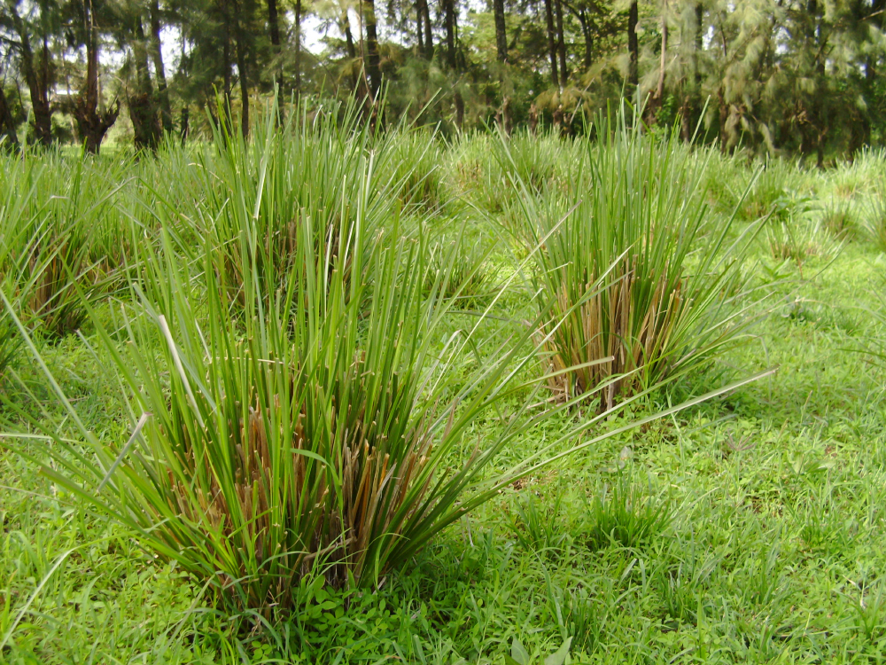

Basonym of Drug
Ushira
Main Synonym
- Sevya
- Jalavasa
- Mrinalam
- Nalada
- Abhaya
Regional Name
- English: Cuscus Grass
- Gujarati: Sugandhi Valo
- Hindi: Khasa
- Kannada: Lavancha
- Malayalam: Ramachham
- Marathi: Vala
Botanical Name
Vetiveria zizanoides Linn
Family
Poaceae
Classification (Gana)
- Aacharya Charaka: Dahaprashaman, Varnya, Stanyajanana, Chardi Nigrhana, Angamardaprashaman Mahakashaya
- Aacharya Sushruta: Sarivadi Gana
- Aacharya Vagbhata: Karpuradi Gana
External Morphology
A perennial grass
Useful Parts
Important Phytoconstituent
- Isobisabolene
- Khusol
- Khusilal
- Zizanoic Acid
- Isokhusimol
- Zizanene
- Epizizanoic Acid
- Beta-Vetivone
- Eregenol
Rasa Panchak
- Rasa: Tikta, Madhura
- Guna: Laghu, Snigdha
- Virya: Shita
- Vipaka: Madhura
Action
Vatapittashamak
Therapeutic Indication
- Varnya (Good for Skin)
- Dahaprashaman (Useful in Burning Sensations)
- Raktapittahara (Useful in Skin and Bleeding Disorders)
- Jwarahara (Anti-pyretic)
- Mutrala (Diuretic)
Therapeutic Uses
- Jwara - Shadangapaniya preparation of Ushira is beneficial in fever.
- Chardi - Ushira and Balaka powder with rice water is beneficial in vomiting.
- Mutrakrichha - Root powder with rock sugar is beneficial in burning micturition.
Dose
Powder: 3 to 5 gm, Decoction: 40-80 ml
Formulations
- Ushirasava
- Shadangapaniya
Adverse Effect
Not Known
Remedial Measure
Not required